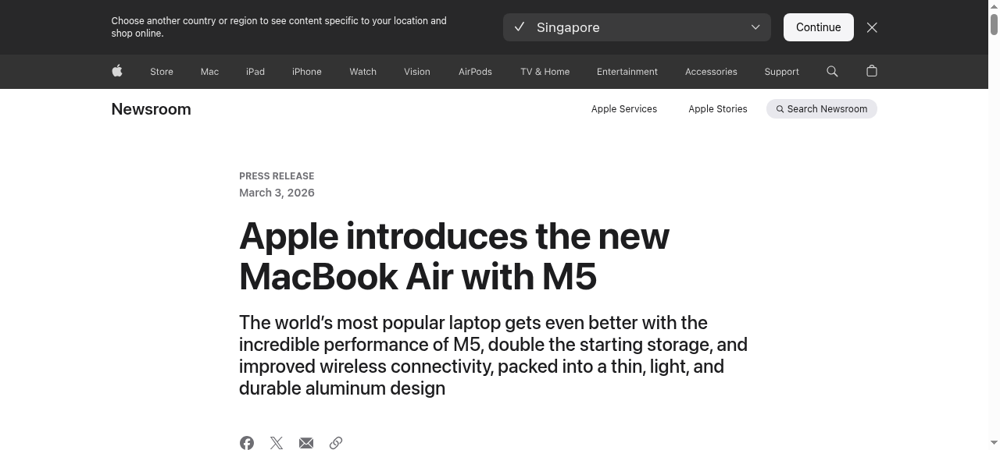

Apple Newsroom蘋果發布全新 MacBook Air 搭載 M5 晶片
中文
蘋果今日發布全新 MacBook Air，搭載 M5 晶片，帶來卓越效能與擴展的 AI 能力。M5 採用更快的 CPU 與下一代 GPU，每個核心皆配備神經網路加速器。MacBook Air 標準容量翻倍至 512GB，並可選配高達 4TB。搭載 Apple N1 無線晶片，支援 Wi-Fi 7 與藍牙 6。配備 12MP Center Stage 相機、最長 18 小時電池續航，以及兩個 Thunderbolt 4 埠。共有天藍、午夜、星光、銀色四種顏色，13 吋與 15 吋兩種尺寸。預購明日開始，3 月 11 日正式上市。
English
Apple today announced the new MacBook Air with M5, bringing exceptional performance and expanded AI capabilities to the world's most popular laptop. M5 features a faster CPU and next-generation GPU with a Neural Accelerator in each core. MacBook Air now comes standard with double the starting storage at 512GB, configurable up to 4TB. Apple's N1 wireless chip delivers Wi-Fi 7 and Bluetooth 6. It features a 12MP Center Stage camera, up to 18 hours of battery life, and two Thunderbolt 4 ports. Available in sky blue, midnight, starlight, and silver in 13- and 15-inch models. Pre-orders start tomorrow, with availability beginning March 11.